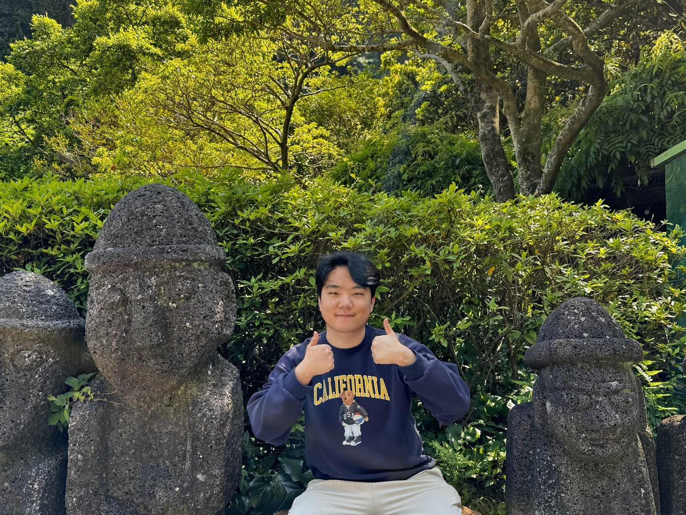
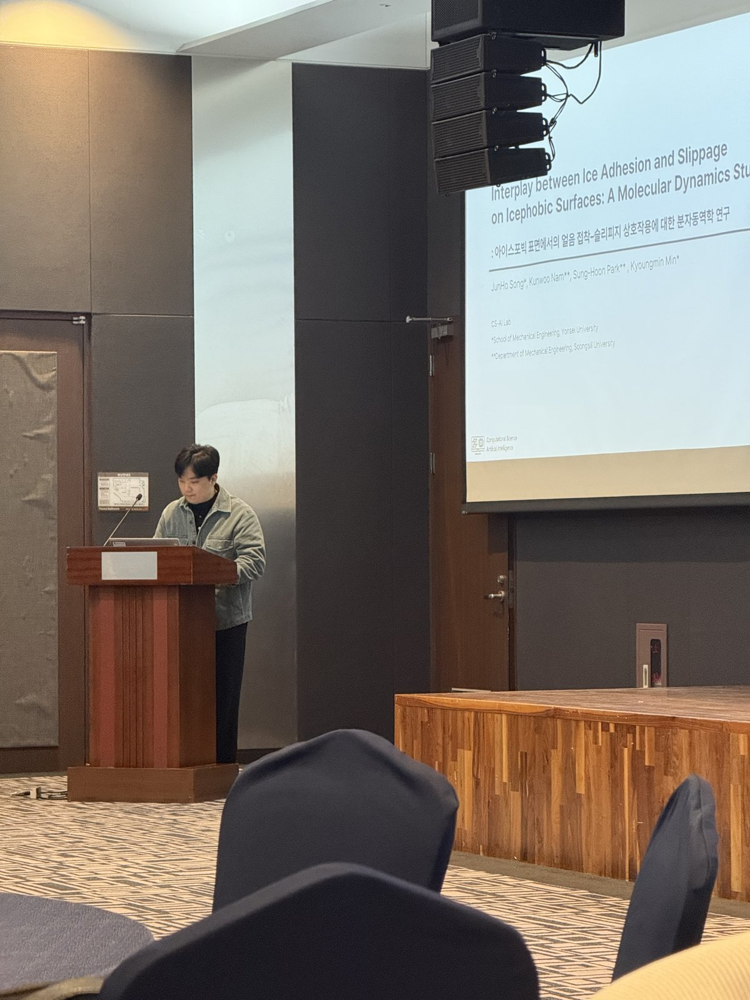
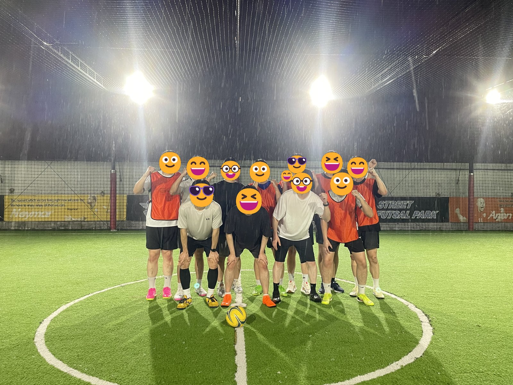
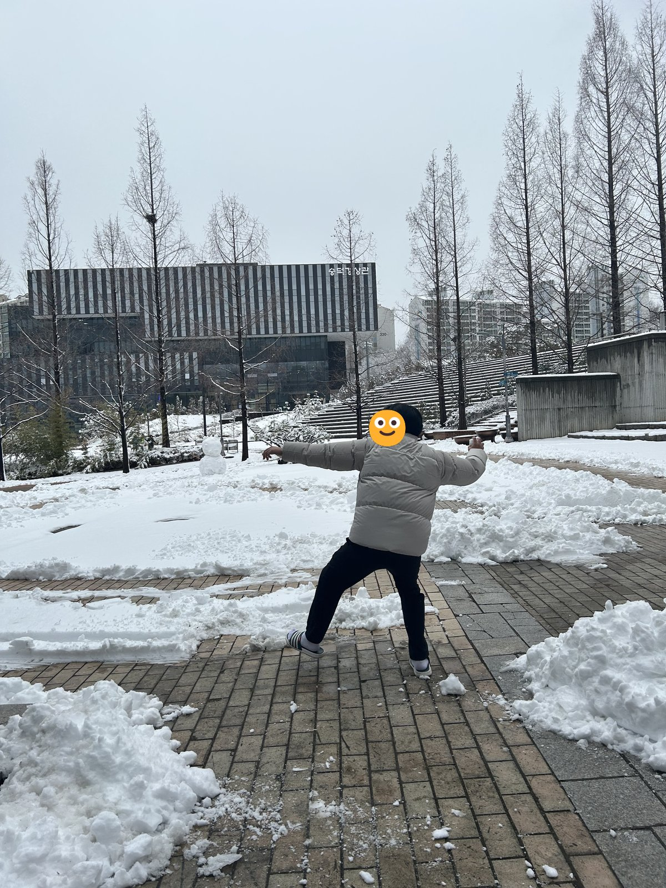
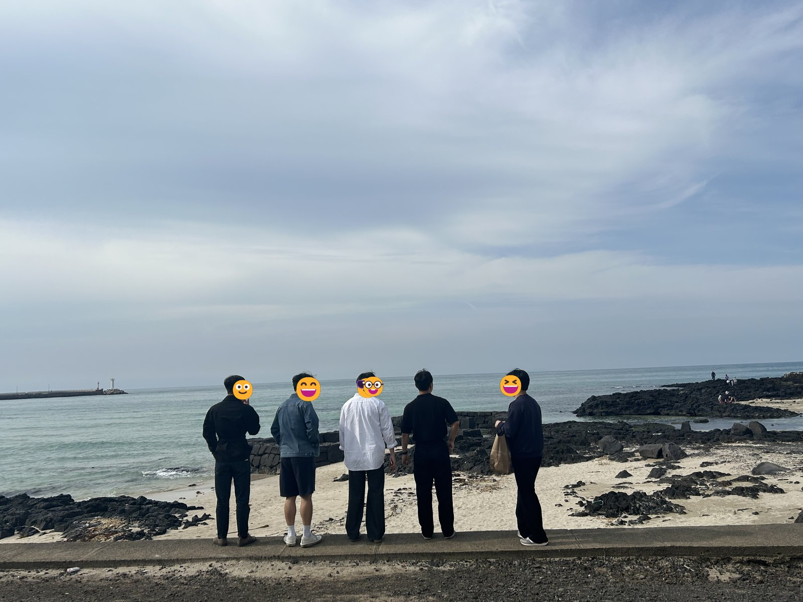
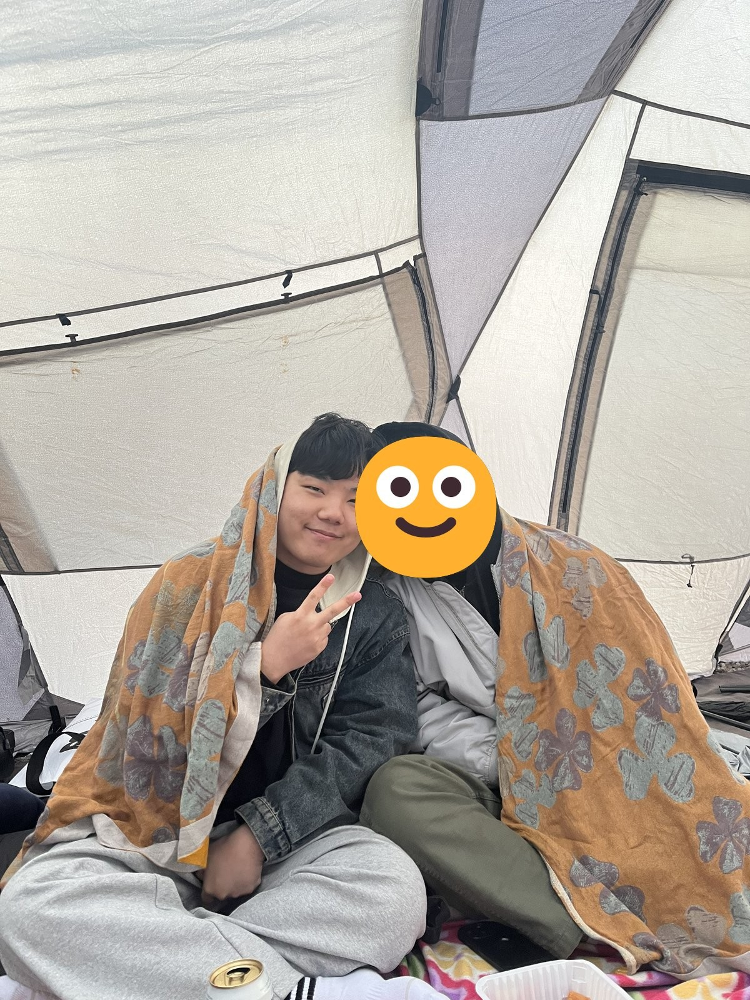
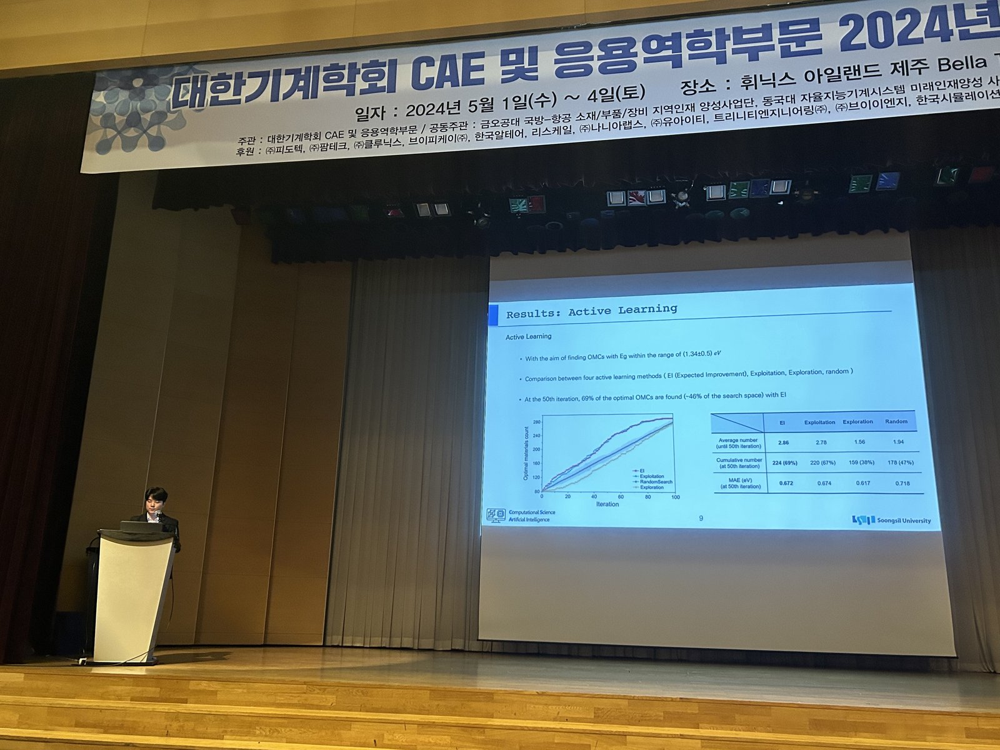
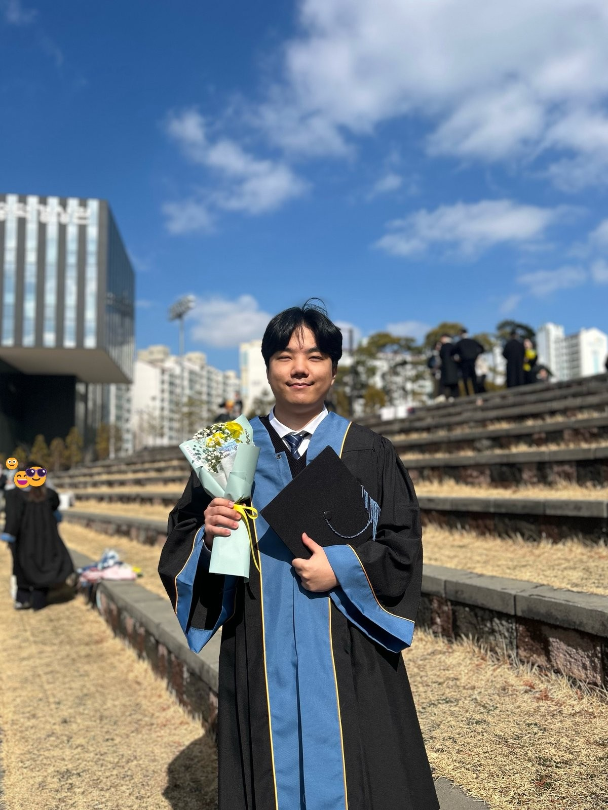
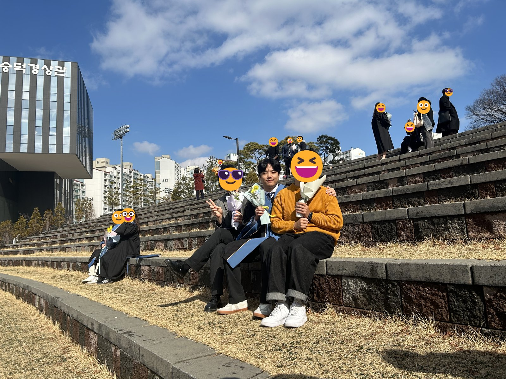
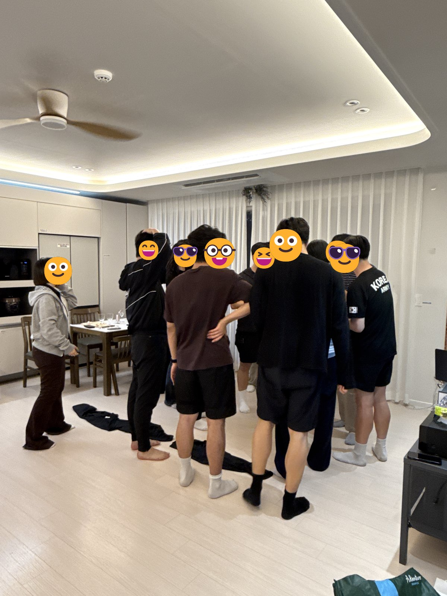

NowResearcher, CS-AI Lab (Prof. Kyoungmin Min), Yonsei University
BeforeM.S. in Mechanical Engineering, Soongsil University (2025). Thesis on zeolite-inspired porous metamaterials
IndustrySeveral industry-sponsored projects: polymer/inorganic interface adhesion, ML potentials for thin-film precursor molecules, a materials-data platform
Looking forGroups working on polymers, interfaces, high-entropy alloys, and machine-learned potentials
Tools
MD
DFT
FEM
MLIP
Materials
Polymers
Metamaterials
Alloys (toward HEA)
Porous materials
Questions
Interfaces & adhesion
Ice adhesion
Interpretable potentials
Micro to macro
Research
The question I keep coming back to: how do atomic structure and interfacial bonding set the mechanical response we measure at the bulk scale? I follow it from DFT and MD up to FEM, from zeolite frameworks to 3D-printed metamaterials, and from molecular bonding at a polymer/inorganic interface to the adhesion strength of a coating.
My part: Writing – original draft, Software, Methodology, Investigation, Formal analysis, Data curation
Question: can an atomic crystal structure become a macro-scale metamaterial? Zeolite frameworks go from the atomistic unit cell to a 3D-printed part (micro to macro)
21 unit cells chosen from ~590,000 zeolites (isotropy, printability) → supercells → electron-density surfaces
Printed by stereolithography in a hyperelastic resin; FEM (Yeoh model) to 50% strain + compression tests with DIC
My part: Writing – original draft, Validation, Methodology, Formal analysis
Question: how do zeolites behave under large compression? Mostly studied only in the elastic range. Our earlier work showed that ductile 3D-printed zeolites follow MD up to ~30% strain, so this is the atomistic end of a micro-to-macro line
ReaxFF MD: compression of 2,710 zeolites up to 95% strain
ML screen: 39,589 near-isotropic candidates out of 590,448 hypothetical frameworks; top 50 + bottom 50 checked by MD
Best ML-picked zeolite absorbs ~20% more energy than the best of the 2,710
Energy absorption tracks compressive stress (R = 0.74); the Si–O–Si angle matters, Si–O bond length barely does
Data-Driven Curation of Organometallic Precursor Boiling Points via Natural Language Processing
J. Hwang, T. Park, J. Jeong, S. Kang, J. Song, J. Kim, A. Jeong, W. Shin, J. Han, J. Won, K. Min. Materials & Design, 260, 115253. doi:10.1016/j.matdes.2025.115253
NLP
Boiling point
ALD/CVD precursors
Materials database
ChemDataExtractor
[10]
Cation-Disordered High-Entropy Garnet Structures as Solid-State Electrolytes for All-Solid-State Batteries: Machine Learning-Driven Discovery
J. Sun, J. Song, J. Kim, J. Jeong, E. Kim, J. Kim, T. Park, K. Min. ACS Applied Materials & Interfaces, 17(35), 49472–49484. doi:10.1021/acsami.5c09935
High-entropy oxides
Solid electrolytes
Garnet (LLZO)
MLIP fine-tuning
Ionic conductivity
2024
[3]
Molecular Dynamics and Machine Learning Insights into the Mechanical Behavior of Zeolites under Large Deformation
Enhancing protein aggregation prediction: a unified analysis leveraging graph convolutional networks and active learning
J. Sun*, J. Song*, J. Kim*, S. Kang, E. Park, S. Seo, K. Min. RSC Advances, 14, 31439–31450. doi:10.1039/D4RA06285J
Graph neural networks
Protein aggregation
AlphaFold2
Active learning
Structure-based ML
[5]
Interpretable Machine Learning Boosting the Discovery of Targeted Organometallic Compounds with Optimal Bandgap
T. Park*, J. Song*, J. Jeong, S. Kang, J. Kim, J. Won, J. Han, K. Min. Materials Today Advances, 23, 100520. doi:10.1016/j.mtadv.2024.100520
DFT
Band gap
Organometallics
Interpretable ML
Active learning
[6]
Artificial Intelligence in the Design of Innovative Metamaterials: A Comprehensive Review
J. Song*, J. Lee*, N. Kim, K. Min. International Journal of Precision Engineering and Manufacturing, 25, 225–244. doi:10.1007/s12541-023-00857-w
Metamaterials
Machine learning
Inverse design
Generative models
Review
[11]
Integrating Data Mining and Natural Language Processing to Construct a Melting Point Database for Organometallic Compounds
J. Jeong*, T. Park*, J. Song, S. Kang, J. Won, J. Han, K. Min. Journal of Chemical Information and Modeling, 64(19), 7432–7446. doi:10.1021/acs.jcim.4c01254
NLP
Melting point
Organometallics
Materials database
Multimodal NN
2023
[12]
Correlating Atomistic Characteristics of Zeolites to their 3D-Printed Macro Structural Properties for Prediction of Mechanical Response
J. Song and K. Min, “Development of an Interpretable Interatomic Potential for Predicting Fundamental Properties of Graphene,” KSME Annual Meeting, Nov 2026 (accepted)
Poster
J. Song, K. Nam, S.-H. Park, and K. Min, “Molecular Dynamics Investigation of Ice Adhesion–Slippage Transition on PDMS-Based Icephobic Surfaces,” KSME CAE & Applied Mechanics Conf., Yeosu, May 2026 (poster)
Oral
J. Song, K. Nam, S.-H. Park, and K. Min, “Exploring the Interplay Between Ice Adhesion and Slippage on Icephobic Surfaces Using Molecular Dynamics,” KSME Annual Meeting, Dec 2025 (oral)
Oral
T. Park, J. Song (presenter), J. Jung, J. Kim, S. Kang, J. Won, C. Baik, J. Han, and K. Min, “Harnessing Feature-Driven Insights for Accelerated Search for Optimal Organometallic Compounds,” KSME CAE & Applied Mechanics Conf., Jeju, May 2024 (oral)
Oral
J. Song, J. Lee, N. Kim, and K. Min, “Prediction of Atomic to Macro Level Mechanical Response Using Concatenation Networks and Active Learning,” KSME Annual Meeting, Nov 2023 (oral)
Patent
Method and Apparatus for Predicting Protein Aggregation of Target Proteins (South Korea).
News
2026
Talk
Abstract accepted at the KSME Annual Meeting (Nov 2026): an interpretable interatomic potential [talk]
Talk
Poster at the KSME CAE & Applied Mechanics Conference, Yeosu: ice adhesion vs slippage on PDMS-based icephobic surfaces (MD) [talk]
Paper
Co-authored paper on phase-stable high-entropy Na cathodes, out in J. Mater. Chem. A[7]
2025
Talk
Oral talk at the KSME Annual Meeting: how ice adhesion and slippage interact on icephobic surfaces (MD) [talk]
Paper
Second author, microfluidic retainer for salivary glucose sensing, out in Lab on a Chip[8]
Paper
Co-authored NLP boiling-point database for ALD/CVD precursors, out in Materials & Design[9]
Paper
Co-first author, machine-learned potentials for organometallic precursors, out in ACS Appl. Mater. Interfaces[1]
Milestone
Joined the CS-AI Lab at Yonsei University as a researcher
Milestone
Finished my M.S. in Mechanical Engineering at Soongsil University
Paper
Co-authored high-entropy garnet electrolyte screening, out in ACS Appl. Mater. Interfaces[10]
2024
Paper
Co-first author, 3D-printed zeolite metamaterials, out in Materials & Design[2]
Paper
Co-first author, MD + ML on zeolites under large deformation, out in Mater. Today Commun.[3]
Paper
Co-first author, graph neural networks for protein aggregation, out in RSC Advances[4]
Paper
Co-authored organometallic melting-point database (NLP), out in J. Chem. Inf. Model.[11]
Paper
Co-first author, interpretable ML for organometallic band gaps, out in Mater. Today Adv.[5]
Talk
Oral talk at the KSME CAE & Applied Mechanics Conference, Jeju: feature-driven search for organometallic compounds [talk]
Milestone
Started my M.S. at Soongsil University
Milestone
B.S. in Mechanical Engineering, Soongsil University
2023
Talk
Oral talk at the KSME Annual Meeting: predicting atomic-to-macro mechanical response with concatenation networks and active learning [talk]
Paper
Co-first author, review on AI for metamaterial design, online in Int. J. Precis. Eng. Manuf.[6]
Paper
Co-authored zeolites from atoms to 3D-printed lattices, out in Materials & Design[12]
Beyond the lab
Soccer. I follow it closely and I am an Arsenal fan
Steam. More hours than skill
PC building. Picking the parts is half the fun, assembling is the other half
History, and strategy games that let you rewrite it
Computational materials science, from first principles to machine-learned potentials
Moments
photo

Two thumbs up with the stone grandpas
photo

Talking about how ice sticks
photo

Soccer in the rain. Still worth it.
photo

Snow day, full commitment
photo

Staring at the sea, as a team
photo

Tent, blanket, no regrets
photo

On stage in Jeju, 2024
photo

B.S. done, flowers in hand
photo

B.S. graduation day, sunny side up
photo

CS-AI Lab workshop, all in one room
photo
Night sea, quiet mind
photo
Me vs the graffiti wall
photo
Sunset silhouette
Background
2025 – now
Researcher, CS-AI Lab (PI: Prof. Kyoungmin Min), School of Mechanical Engineering, Yonsei University
2024 – 2025
M.S. in Mechanical Engineering, Soongsil University. Advisors: Prof. Kyoungmin Min, Prof. Heonjun Yoon. Thesis: Analyzing the Mechanical Behavior of Zeolite-Inspired Porous Metamaterials
2024
Graduate teaching assistant, Solid Mechanics Laboratory (undergraduate course), Soongsil University
2018 – 2024
B.S. in Mechanical Engineering, Soongsil University